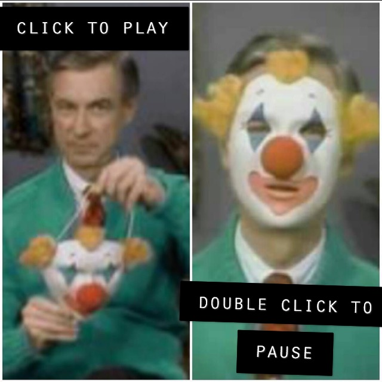

For my Rhetoric of Sound Project I decided to take a well know commerical's audio and alter it, displaying how important sound can be both in establishing someone's ethos and entire argument.
Obviously, changing the words would change the message, but what if the dialouge were to remain identical to the original trailer? Simply reordered and and tonage adjusted. The result speaks for itself, turning many a person's childhood dreams into a waking nightmare.
